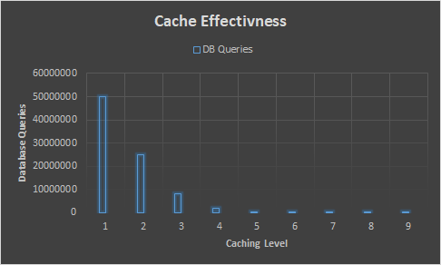

Dynamic SQL
Never write another SQL Query

Rapid development
Streamlining development by handling most queries automatically allows developers to focus on higher level tasks.
Performance and Efficiency
Simplistic writing combined with efficient pre-processing combines the ease of Select * with the performance of a well tuned query.

Extensibility and Caching
With centralized code for database operations, implementing caching strategies can improve overall program database performance. Other features, such as analytics and monitoring, can be added seamlessly for all database-bound objects.